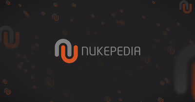

記事・リンクを検索
⌘K
8 件のポスト

NukeとComfyUIを組み合わせたクリーンアップ手法を解説する動画。

Nuke内で直接ペイントできるギズモ「ACS_AutoCustomScribbles」。

Steffen Hampel氏が雪の道路シーンを制作したプロセスを解説した記事「Sunny winter Road scene using V-ray & Nuke」。

幻想的な世界の環境制作を学べるコース「3D Environments: Create Otherworldly Fantasy Lands」。最終レンダリングはClarisseだが、Maya・Houdini・Nukeについても学べる内容。

ActionVFXが提供する無料のカメラシェイク素材。Nukeでトラッキングすることでリアルなカメラシェイクを再現できる。

ILMロンドン所属のGeneralist、Yen Chen氏による作品の制作プロセス。使用ソフトはHoudini、Nuke、および（現在は使用できない）Clarisse。

Blender、RealityScan、UE5、Nukeを使ったシーン制作のチュートリアル。Houdiniとは異なるワークフローだが、背景制作に通じる部分が多いとしている。

大規模な2D環境をHoudiniとNukeを使って3Dで再現する手法を解説した80lvの記事。